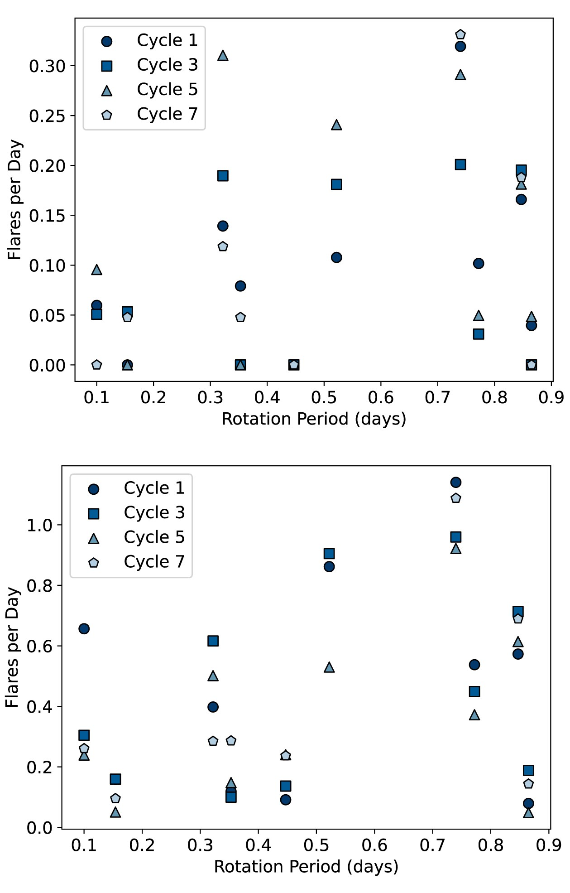
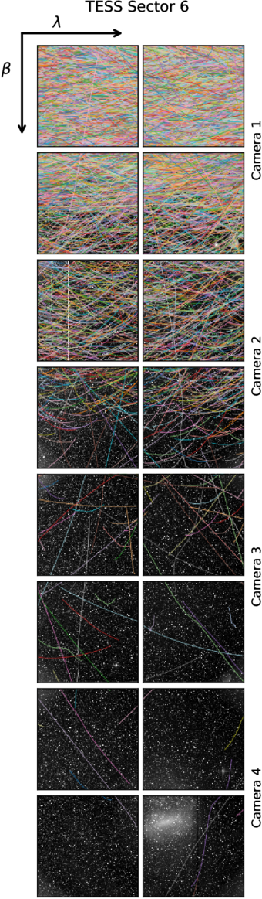
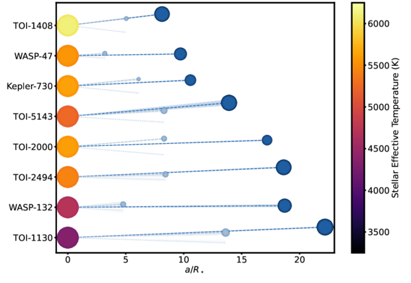

Welcome TESS followers to our latest news bulletin!1
This week, we are looking at three recent papers from the archive. These papers cover recent work in stellar activity, asteroid detection, and planet discovery. Enjoy!
First, astronomers are investigating a cosmic mystery involving small, incredibly fast-spinning stars that surprisingly produce very few explosive flares. By analyzing X-ray data from Swift and XMM-Newton and optical data from TESS, researchers discovered that, contrary to larger Sun-like stars, this small M-dwarf sample does not show magnetic supersaturation, or a decline in magnetic activity despite increasing rotation rates. The true reason for their unusual calmness remains an active mystery.
Next, scientists have developed a new artificial intelligence tool to uncover asteroids hidden within the vast image archives of NASA's TESS space telescope. By automatically learning to spot faint objects moving at any speed or direction, this method will help us discover and map previously unknown minor bodies in our own solar system.
Finally, astronomers recently discovered two new TESS systems that each contain a massive, hot giant planet accompanied by a smaller, closer in planetary companion. The survival of these fragile inner worlds reveals that the giant planets must have formed in place or migrated to their current orbits through a smooth, peaceful process, rather than through more dynamic planet migration or scattering that would have destroyed their smaller neighbors.
The puzzling story of flare inactive ultra-fast-rotating M dwarfs –III. Investigating X-ray activity (Doyle et al. 2026) :
This paper investigates the ongoing astronomical mystery of why certain ultra-fast-rotating M dwarf stars, which complete a full rotation in under a single day, exhibit unexpectedly low levels of optical flaring, a phenomenon that contradicts standard stellar magnetic activity models. NASA’s TESS mission played a critical role in this research by providing the highly precise, continuous optical light curves necessary to measure the rotation periods and to track the stars' optical flare rates across a seven-year baseline. Using multi-year TESS data spanning several observation cycles, the researchers cataloged hundreds of optical flares from a sample of 10 M dwarfs. The authors noted greater long-term variations in flare rates and starspot modulation for stars with rotation periods < 0.6 days, hinting at underlying magnetic activity cycles. To understand the suppressed flaring, the authors combined these TESS optical data with X-ray observations from the Swift and XMM-Newton observatories to test for "supersaturation"—a theoretical state where extreme rotation stifles magnetic activity. Ultimately, the X-ray data showed these stars are operating at normal, saturated X-ray levels rather than being supersaturated, meaning the root cause of the quiet optical flare behavior observed by TESS remains an intriguing puzzle. Observations by TESS in the cycles to come will allow for continued monitoring of the flare rates, allowing a better understanding of the magnetic cycles for these unexpectedly quiet stars.
Trajectory-Agnostic Asteroid Detection in TESS with Deep Learning (Powell et al. 2026) :
TESS was primarily designed to hunt for planets outside our solar system, but its unique ability to stare continuously at large patches of the sky with a wide field of view and high image cadence makes it a powerful facility for observing asteroids within our own solar system. Leveraging the massive archive of TESS Full Frame Images, researchers have developed a trajectory-agnostic deep learning approach—utilizing a novel stacked 3D U-Net neural network, dubbed a "W-Net"—to detect faint moving objects without needing to place priors on their speed or direction. As illustrated in Figure 3 (which shows dense, colorful tracks of thousands of asteroids serendipitously captured across TESS's four cameras during a single 27-day observation sector), the spacecraft's fixed-pointing strategy and vast spatial coverage provide the perfect environment for spotting minor bodies, particularly near the ecliptic plane, as seen in the increase of tracks in Camera 1. The W-Net learns to filter out the static starry background and intelligently scale the data to isolate the faint signals of moving objects. The success of this method is demonstrated by the model's ability to take barely visible asteroids in single TESS frames and detect them by learning image shifting and stacking in order to improve the signal strengths of faint asteroids. Ultimately, the uninterrupted, high-cadence astronomical data provided by the TESS spacecraft serves as the foundational cornerstone for this machine learning pipeline, enabling a comprehensive, automated census of our solar system that could be used in future sky surveys such as NASA’s Nancy Grace Roman Space Telescope.
TOI-2494 c and TOI-5143 c: A Hot Saturn and a Hot Jupiter with Interior Planetary Companions (Quinn et al, 2026) :
The recent discovery of two unique planetary systems, TOI-2494 and TOI-5143, provides crucial insights into the formation and migration of giant planets, a breakthrough made possible by the precise photometric data from NASA’s TESS. Each of these star systems hosts a massive, close-orbiting giant planet—a "hot Saturn" and a "hot Jupiter," respectively—that is accompanied by a smaller, inner mini-Neptune companion. TESS's continuous, high-precision space-based observations were able to capture the faint, periodic dips in starlight that revealed both the grazing transits of the outer giant planets and the much shallower transit signals of their smaller inner companions. As illustrated in the figure, the phase-folded TESS light curves clearly isolate the distinct transit signatures of both planets in each of these compact, multi-planet systems. Adding these new systems to the already known planet population, the authors show that hot Jupiters with close planetary companions tend to have well-aligned orbital planes. This alignment suggests that these specific compact planetary hot Jupiter systems with inner companions formed and migrated through a dynamically quiet process rather than through violent gravitational scattering or high-eccentricity migration, providing astronomers with new hints to decode the evolutionary history of these giant planet systems.

Fig. 1: Taken from Doyle et al (2026). The flare number per day plotted as a function of the stellar rotation period for the 10 stars observed across TESS cycles. The top panel shows only higher-energy (\(>\)10\(^{33}\) erg) flares, while the bottom panel shows all identified flares. This figure highlights TESS's crucial contribution to the study by illustrating the long-term monitoring of flare rates and capturing the subtle variability in these ultra-fast-rotating M dwarfs over several years.

Fig. 2: Taken from Powell et al. (2026). Composite image from all TESS Camera and CCD observations taken during Sector 6. Plotted on top are the tracks of all known asteroids observed during the Sector. More tracks are seen towards the top of the image, as the spacecraft is oriented such that Camera 1 is closest to the galactic plane.

Fig. 3: Taken from Quinn et al (2026). Relative orientation of the known systems with an outer giant planet with a smaller inner companion. The mutual inclination of the systems is low, hinting at a dynamically quiet formation history.
-
This news item was created with input from OpenAI / NASA GSFC, 2026 ↩